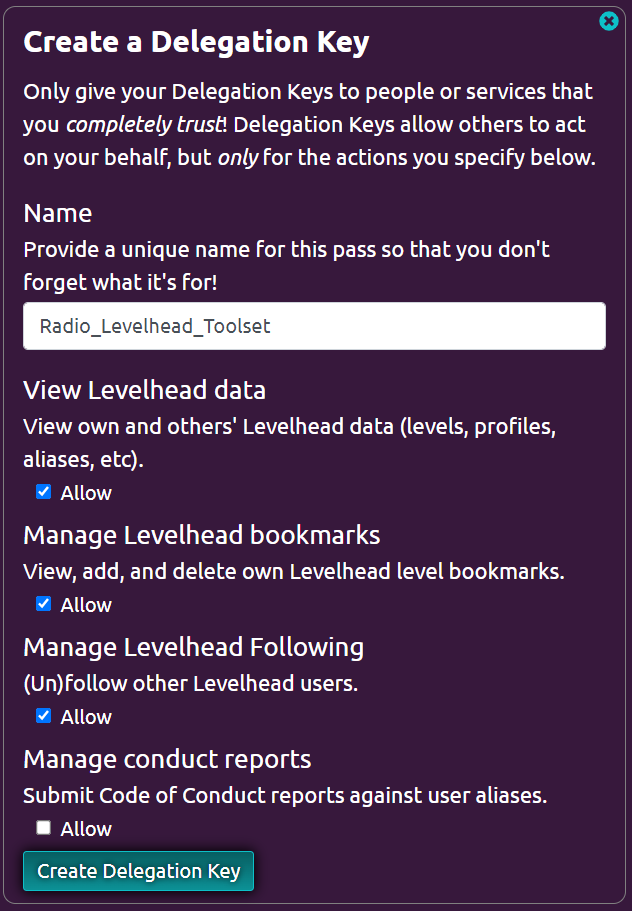

Input your delegation key here to get access to extra features on the site!
The Key is saved locally.
You can create a delegation key here!
After clicking the link, you only need to scroll down to the delegation key section and click "Create Delegation Key" (as shown below)
WARNING: Do not uncheck any of the options! That may cause issues on this site.
